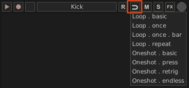
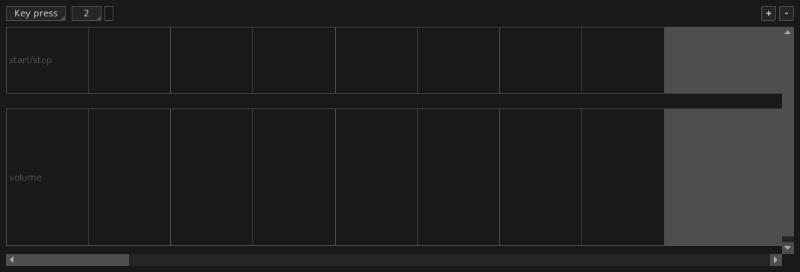
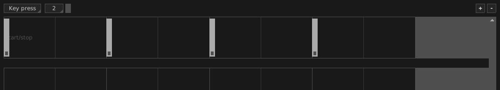
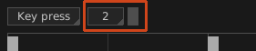

In this tutorial you will learn how to lay down a drum loop made of multiple samples (kick, snare, ...) through the powerful Action Editor. All you need is a bunch of good drum audio samples, say Kick.wav and Snare.wav for simplicity.
Since you are working with audio data, you will need some sample channels to hold your drum kit. Select the audio files from your operating system's desktop and drag them over an empty column in Giada. This will create a new sample channel for each audio file, already filled with your sound and ready to play.
Alternatively, you can create an empty sample channel first and then load the audio file in it. Click on the Edit column button on top of any column, then select Add Sample channel from the drop-down menu: a new empty sample channel will appear in the selected column. Now click on the channel main button, highlighted below:
Select Load new sample... from the drop-down menu. A file browser window will appear: select the file you want to load (say Kick.wav) and then click the Load button when you're done. The sample channel will now look like this:
Rinse and repeat for all the samples you want to load.
Click on the sample channel mode button highlighted below and select Oneshot . retrig mode from the drop down menu:

Do this for both Kick.wav and Snare.wav sample channels. This mode works best for short samples that you want to trigger through the Action Editor.
It's now time for drum programming. Once again click on the sample channel main button (let's work with Kick.wav first) and select Edit actions... from the drop-down menu. You will be presented with the Action Editor for sample channels, which looks like this:

The upper row contains the start and stop actions for the sample channel you are editing. Click on each beat cell to place a start action. For example, a 4/4 kick layout would look like this:

You can also snap actions to grid for more accuracy. Choose the grid spacing from the drop-down menu and enable snapping by clicking on the checkbox:

Repeat the process for Snare.wav too, or more generally for any other sample channel that holds your drum kit. Close the Action Editor when you're done with it.